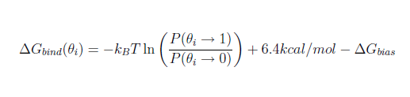

fragment.pdb - the structure of the small fragment molecule in PDB formatprotein.pdb - the structure of the N-terminal domain of HSP90 in PDB formatjaws2_waters.pdb - The structure of the waters which binding affinity we will determine
The waters pdb needs to be in the appropriate format. If you wish to run JAWS stage 2 from the output clusters from a JAWS stage 1 calculation, you do not need to make any changes to the format. In the appropriate section below, there is an explanaition on how to change the format of your waters to the appropriate format for this calculations. For the purpose of this tutorial, your file jaws2_waters.pdb is already in the correct format.
python2.7 $PROTOMSHOME/protoms.py -s jaws2 -l fragment.pdb -p protein.pdb --gcmcwater jaws2_waters.pdb --jawsbias 8 10 12 14this sets up one JAWS stage 2 simulation, to estimate the binding affinty of the waters given in jaws2-waters.pdb, assuming the an on/off ration close to one will be obtained with jawsbias of 8 to 14. This command will produce one protoms input file per water molecule. Each of the simulations will run 5 m equilibration steps and 40 m production steps. Output will be printed to files every 100 k moves.
The -s jaws2 argument tells the script to setup a JAWS stage 2 simulation. The -p and -l arguments specifies the protein and the ligand, respectively. After the --gcmcwater flag, the pdb file with the waters which binding affinities we want to calculate should be specified. The --jawsbias flag corresponds to a JAWS stage 2 specific parameter. It can be understood as a force applied to the water molecules, increasing their likelyhood of being off as we increase the value of the bias. We wish to apply a jawsbias such that the ratio of simulation steps during which the considered water was at high theta values (on) with respect to the time spent at low thetas (off) is as close to 1 as possible. More on jawsbias can be read in the protoms manual.
mpirun -np 4 $PROTOMSHOME/protoms3 run_jaws2-w1_bnd.cmd > run_w1.out
Where the number after -np stands for the number of cores which the simulation will use, and should be set to as many as jawsbias values.
The calculations will take approximately 10 h to complete.
In the out folder produced (out_jaws2-w1), different directories for each jawsbias value will be placed, and a results can be found in each of these. Within this results file, information on the proportion of moves spent at high and low theta values is printed at the end of each information dump (starting with the line RESULTS FILE). All of the simulation moves are taken into acount in the last information dump, so we only really need to look at the last lines of the file. These last lines will look similar to this:
#################################################### JAWS-2 moves with theta above 0.95 - centre position #################################################### HIGH 2197270 59.785316428542785 31.516200149459788 27.603962363437134 #################################################### JAWS-2 moves with theta below 0.05 - centre position #################################################### LOW 2591119 59.587933149584636 30.699611271801380 27.297105422389237
Look for the jawsbias for which the ratio between the HIGH and the LOW moves is closer to one. Now an estimation on whether the ratio is close enough to one has to be made. As a guide, a ratio between 0.8 and 1.2 is probably acceptable. If such ratio is not found in any of your jawsbias, you are advised to re-run this simulations with a more appropriate range of jawsbias.
When the desired jawsbias output has been chosen, the binding free energy of the water can be estimated following the formula shown below: 
where P(θ→1)/P(θ→0) is approximated from the proportion of moves spent at high theta values with respect to the moves spent at low theta values.
This same analysis procedure should be followed for each of the water molecules which binding affinity is to be calculated.
As an example, if the results file shown above is found with an applied jawsbias of +10kcal/mol, the consquent binding free energy of the water molecule is estimated to be -3.4kcal/mol. This was the case of one run for the first of the waters in the jaws2_waters.pdb file provided. Please, bare in mind this method is inherently noisy.
HEADER WAT ATOM 1 O00 WAT 2137 61.033 30.884 27.763 ATOM 2 H01 WAT 2137 60.475 31.645 27.603 ATOM 3 H02 WAT 2137 60.548 30.084 27.561 ATOM 4 M03 WAT 2137 60.891 30.879 27.714 TER ATOM 1 O00 WAT 2139 60.771 34.710 23.191 ATOM 2 H01 WAT 2139 61.285 34.865 23.983 ATOM 3 H02 WAT 2139 60.076 34.079 23.379 ATOM 4 M03 WAT 2139 60.746 34.645 23.324 TER ATOM 1 O00 WAT 2068 62.808 32.279 29.365 ATOM 2 H01 WAT 2068 62.660 32.932 30.049 ATOM 3 H02 WAT 2068 62.376 31.460 29.608 ATOM 4 M03 WAT 2068 62.729 32.256 29.491
When the water pdb file was obtained by any other method which is not the result of a JAWS stage 1 calculation, it is likely that the format does not correspond to that shown above. However, the transformation to the desired format should be as easy as typing:
python2.7 $PROTOMSHOME/tools/convertwater.py -p waters_in.pdb -o jaws2_waters.pdb -n WAT
Where the name of the pdb files containing the waters in the original format is introduced after the flag -p and the name of the ouput pdb file after -o . This script will tranform your waters to Tip4p-like waters, but with the necesary residue and atom names. Please, check the output generated by this script. In case no satisfactory changes were made, try changing the residue name of your original pdb to 'SOL' or 'HOH' and then type the command given above.
Once the waters are in the correct format, please rememeber to include the header in the first line, as displayed in the example above.
It is also posible to set up the input files and run protoms for one individual jawsbias. The whole procedure is basically identical. The execution command will differ:
$PROTOMSHOME/protoms3 run_jaws2-w1_bnd.cmd
and in the generated out folder out_jaws2-w1 there will be no folders for each bias.
--nequil - this controls the number of equilibration steps--nprod - this controls the number of production steps
python2.7 $PROTOMSHOME/protoms.py -s jaws2 -p protein.pdb -l fragment.pdb --gcmcwater jaws2_waters.pdb --jawsbias 8 10 12 14 --nequil 10E6 --nprod 50E6
you will run 10 m equiliration steps and 50 m production steps (instead of the 5 m and 40 m that is default)
--repeats or just -r.
by typing for instance
python2.7 $PROTOMSHOME/protoms.py -s jaws2 -p protein.pdb -l fragment.pdb --gcmcwater jaws2_waters.pdb --jawsbias 8 10 12 14 -r 5
you will create 5 input files for the JAWS calculation. Therefore, you also need to execute ProtoMS 5 times per water molecule with the different input files. The output will be in 5 different folders per water molecule, e.g. out1_jaws2-w1 and out2_jaws2-w1.
fragment.prepi = the z-matrix and atom types of the fragment in Amber formatfragment.frcmod = additional parameters not in GAFFfragment.zmat = the z-matrix of the fragment used to sample it in the MC simulationfragment.tem = the complete template (force field) file for the fragment in ProtoMS formatprotein_scoop.pdb = the truncated protein structurejaws2_wat1.pdb = the pdb of the first of the jaws2 water molecules, in isolationjaws2_wat2.pdb = the pdb of the second of the jaws2 water molecules, in isolationjaws2_not1.pdb = the pdb of all the jaws2 waters except for the first. It is used as part of the simulation solvent when jaws2 is run for the first waterjaws2_not2.pdb = the pdb of all the jaws2 waters except for the second. It is used as part of the simulation solvent when jaws2 is run for the second waterwater.pdb = the cap of water solvating the protein-ligand systemrun_jaws2-w1_bnd.cmd = the ProtoMS input file for the JAWS stage 2 simulation on the first water of those providedrun_jaws2-w2_bnd.cmd = the ProtoMS input file for the JAWS stage 2 simulation on the second water of those providedjaws2 1 multijaws2 8.000 10.000 12.000 14.000In the lines seen above, the
jaws2 line indicates the initial value of θ for the jaws2 water being considered. The multijaws2 line sets the different values of jawsbias at which the simulation will be run. When only one jawsbias has been especified, the equivalent line in the input file starts with jbias instead.
originx 59.533 originy 29.384 originz 26.263 x 3.0 y 3.0 z 3.0
originx, originy, originz, x, y, z parameters indicate the origin and length of the jaws-box in each spatial coordinate.
protoms.py. This is relevant in cases where you are interested in specifying certain parameters which are pre-determined by protoms.py.
fragment.pdb.
fragment.pdb contains a directive, telling ProtoMS the name of the solute. The line should read HEADER XDK, where xdk is the residue name in the fragment, and can be added by typing
sed -i "1iHEADER XDK" fragment.pdb
python2.7 $PROTOMSHOME/tools/ambertools.py -f fragment.pdb -n XDK
and this will execute the AmberTools programs antechamber and parmchk, creating the files fragment.prepi and fragment.frcmod, respectively.
python2.7 $PROTOMSHOME/tools/build_template.py -p fragment.prepi -f fragment.frcmod -o fragment.tem -n XDK
this will creates the files fragment.tem containing the ProtoMS template file and fragment.zmat. It is a good idea to check this files to see if the script has defined the molecule properly.
$PROTOMSHOME/data/gcmc_wat.tem.
python2.7 $PROTOMSHOME/tools/convertatomnames.py -p protein.pdb -o protein_pms.pdb -s amber -c $PROTOMSHOME/data/atomnamesmap.dat
The converted structure will be in protein_pms.pdb. This execution assumes that the Amber naming convention is used in protein.pdb.
python2.7 $PROTOMSHOME/tools/convertwater.py -p protein_pms.pdb -o protein_pms_t4p.pdb
creating protein_pms_t4p.pdb.
python2.7 $PROTOMSHOME/tools/scoop.py -p protein_pms_t4p.pdb -l fragment.pdb -o protein_scoop.pdb
The protein scoop is centred on the fragment molecule and all residue further than 20 A are cut-away. The scoop is written to protein_scoop.pdb
python2.7 $PROTOMSHOME/tools/solvate.py -b $PROTOMSHOME/data/wbox_tip4p.pdb -s fragment.pdb -pr protein_scoop.pdb -o water.pdb -g droplet
this will create a droplet with 30 A radius centred on the fragment molecule. The droplet is written to water.pdb
solvate.py script adds the crystallographic waters from the scoop to the droplet. Therefore, we need to remove them from the scoop PDB-file, to avoid duplicates.
sed -i -e "/T4P/d" -e "/TER/d" protein_scoop.pdb
python2.7 $PROTOMSHOME/tools/split_jawswater.py -w jaws2_waters.pdb -o jaws2_ --jaws2box
with this command, the files jaws2_watX.pdb and jaws2_notX.pdb will be generated (where X is a number that goes from 1 to the number of jaws2 waters). They should contain all required information on the jaws2-waters.
python2.7 ~/ProtoMS3.0/tools/clear_gcmcbox.py -b jaws2_wat1.pdb -s water.pdb -o water.pdb
This command should be run again for each of the pdb files of the individual water molecules.
Now we have all the files need to run the simulation. As you noticed, there is some difference in the files produced with this step-by-step procedure and those created with protoms.py.
python2.7 $PROTOMSHOME/tools/generate_input.py -s jaws2 -p protein_scoop.pdb -l fragment.pdb -t fragment.tem -pw "water.pdb jaws2_not1.pdb" -o run_jaws2-w1 --jawsbias 8 10 12 14 --gcmcwater jaws2_wat1.pdb --outfolder out_jaws2-w1
creating run_jaws2-w1_bnd.cmd. Remember to repeat this command for each of the jaws2 water molecules.
1. Murray et.al. J. Med. Chem., 2010, 53(16), pp 5942-5955
2. Michel et.al. J. Phys. Chem. B, 2009, 113(40), pp 13337-13346